1-18-5 網路通訊基礎-傳輸層安全性 TLS
SSL （Secure Sockets Layer，安全套接層）協定是網景公司（Netscape）最初設計用來啟動網頁上的電子商務傳輸安全性，而這項協定會運用加密技術來保護消費者的個人資料，並搭配驗證程序和完整性保證機制，來確保交易安全。為了達到這個目標，SSL 協定被直接實作在 TCP 的最上面，並且會使用著各種協定（HTTP、電子郵件、即時傳訊等等）的應用層（application layer）當中（如圖-1），如此即可在跨網路通訊情況下，以不做任何改變的方式提供通訊安全性。
圖1: 傳輸層安全性（TLS）
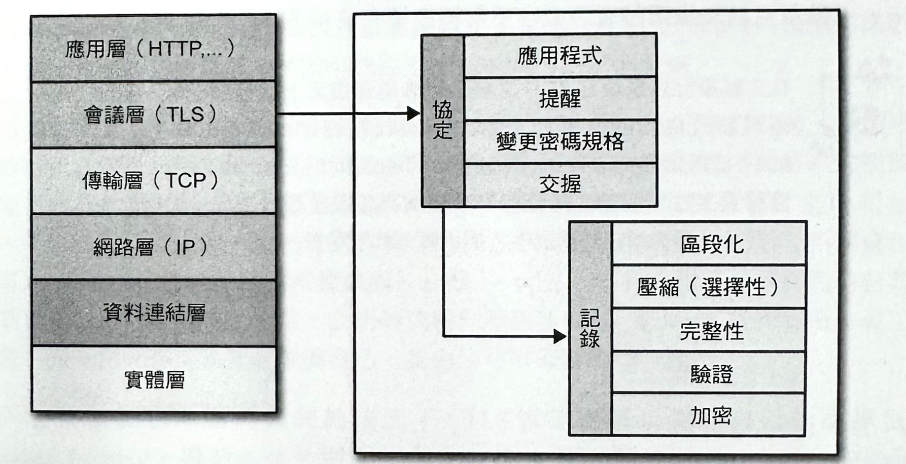當 SSL 被正確使用時，第三方觀察者就只能夠推測出連線端點、加密類型，以及資料發送的頻繁程度和大約傳輸量，但是卻無法對實際的資料進行讀取或任何的修改作業。
當 SSL 協定被 IETF 進行標準化的時候，就已經被更名為「TLS」（Transport Layer Security，傳輸層安全性）。許多地方都會交替使用 TLS 和 SSL 名稱，但技術上，它們是不一樣的，因為它們個別所描述的是不一樣的協定版本。
SSL 2.0 是最早被公開釋出的協定版本，不過它很快就因為被發現好幾個安全缺陷，而改由 SSL 3.0 所取代。由於 SSL 協定的所有權是屬於 Netscape 公司，因此 IETF 花了點功夫去對這個協定進行標準化，進而制訂出 RFC2246 一也就是所謂的 TLS 1.0，而且也有效地升級到等同 SSL 3.0 的程度：
這個協定與 SSL 3.0 之間的差異並不大，但很明顯地是要預先排除在 TLS 1.0 和 SSL 3.0之間進行互換的情況。 —TLS 協定 RFC 2246
自從 TLS 1.0 在 1999年一月發佈開始，IETF 工作小組已經提出了另外兩個新版本，以解決找到的安全缺陷，並對協定的能力進行擴充一在 2006年4 月釋出了 TLS 1.1，而 2008年8月 則釋出了 TLS1.2。內部的 SSL 3.0 實作部分以及後續的 TLS 版本，其實都非常類似的，而儘管有很多希望使用者升級到新版本才能避免因安全漏洞而遭到攻擊的理由，但截至目前為止還是有許多客戶端都持續在使用 SSL 3.0 和 TLS 1.0。
TLS 被設計好是要在 TCP 之類的可靠傳輸協定上進行運作的。然而，它也有被改寫出能夠在 UDP 之類的資料包協定上運作的版本。在 RFC 6347裡所定義的 DTLS（Datagram Transport Layer Security，資料包傳輸層安全性）協定，就是以 TLS 協定為基礎所發展出來，而且能夠在保持資料包傳輸模式的情況下，提供類似的安全性。
加密、驗證與完整性
TLS 協定被設計成會對使用這項協定的所有應用程式，提供「加密」（encryption）、「驗證」（authentication），和「資料完鳖性」（data integrity）等三項必要服務。技術上，你不一定會在每一種情況下，都需要用到這全部三種。你可能會決定去接受一份未經可靠性驗證處理的憑證，但是你應該要清楚瞭解其中的安全性風險，以及這樣做的後續影響。實際上，一個安全的網頁應用程式都將會運用到這全部的三項服務。
-
加密（Encryption）
可用來把要從一台電腦發送至另一台的東西給弄亂，以致於無法直接看出原本內容的一種機制。
-
驗證（Authentication）
可用來對提供的識別資料進行有效性檢驗處理的一種機制。
-
完整性（Integrity）
可用來偵測出訊息被篡改或者被偽造情況的一種機制。
為了建立起一個加密安全資料通道，連線端就必須認可會被使用到的密碼組（ciphersuites），以及會被用來對資料進行加密處理的金鑰資料（key）。TLS 協定會指定一個有明確定義的交握程序，來執行這項交換作業。這項交握的巧妙之處，以及 TLS 可以實際運作起來的原因，就是在它使用了「公開金鑰加密」（public key cryptography）（也被稱為「非對稱金鑰加密」），而這樣的方式讓連線端在不需建立起相互間的任何預備知識的情況下，並且在未加密的通道上，即可去協定出一個共用的安全金鑰。
在 TLS 交握程序當中，協定也允許連線兩端都去對它們的識別資訊進行驗證。當運用在瀏覽器裡頭的時候，這項驗證機制可讓客戶端去對它所要求的伺服器（像是你的網路銀行）進行查證作業（verify），以確保該伺服器不是有人以造假伺服器名稱或 IP 位址的方式，所偽裝的目標主機。這項查證作業是建構在既定信任鏈的基礎之上。此外，伺服器還可以選擇性地對客戶端的識別資訊進行查證一比如說，公司的代理伺服器（proxy server）能夠對所有員工進行驗證，而每個人都可以擁有專屬自己，並由公司所簽署的唯一憑證。
最後，在搭配加密和驗證機制的情況下，TLS 協定還可以提供自己的訊息框架（message framing）機制，並且搭配一個「訊息驗證代碼」（message authenticationcode, MAC）來對每個訊息進行簽署。MAC 演算法是一種單向加密雜湊函數（一種有效的校驗和機制），而其中的金鑰則是由連線兩端去進行協定。每當有個TLS 記錄被發送出去，MAC值就會被產生出來，並且被附加到那個訊息上，而接收者則能夠去計算，並查證被發送過來的MAC值，以確保訊息的完整性和真實性。
結合道三項機制，就可以用來當作網頁上安全通訊的一項基礎功能。所有最新的網頁瀏覽器都能支援各種不同的密碼組，並且能夠對客戶端和伺服器端進行驗證，甚至針對每筆記錄，執行訊息完鳖性的查核作業。
代理伺服器、中介裝置、TLS，以及網站上的新協定
HTTP 的可擴充性和成功，創造了網站上的各種代理伺服器（proxy）和中介裝置（intermediaries）的蓬勃發展的生態系統一這當中包括有：快取伺服器、安全閘道器、網頁快取裝置、內容過濾器，以及其他相關裝置。其中的某些裝置，我們是可以察覺到它們的存在（像是代理伺服器），但是其他的某些裝置，對於終端使用者來說，則完全無法察覺它們的存在。
遺憾的是，這些伺服器的大幅成功與存在情況，對於試著要以任何可能方式來攏脫 HTTP 協定的人來說，會有點小問題一某些代理伺服器（proxy server）可能只是在轉送 HTTP 擴充資訊（extensions），或是它們無法進行解讀的替代線路格式而已，而其他的裝置則可能不明就裡，只會繼續盲目地套用它們的處理邏輯，以致於有些像安全裝置之類的設備，可能會在空無一物的地方，憑空地推斷出有惡意流量的存在狀况。
換句話說，實際上，只要脫離「HTTP 是在通訊埠 80 上」的明確定義，往往就會引導出不可靠的配置情況一有些客戶端是完全不會問題，但其他情況則可能會因為不可預知的行為反應而導致失敗一比如說，同一個客戶端可能會隨著它在不同網路之間的遷移情況，而看到不同的連線行為反應。
由於會有這類行為，所以新的協定和 WebSocket、SPDY，以及其他 HTTP 擴充功能，通常就得藉著建立一個 HTTPS 通道的方式，來繞過中介代理伺服器，以便提供一套可靠的配置模型，而當中的加密通道會對來自於中介裝置的資料進行模糊處理。這樣雖然可以解決中介裝置的問題，但是對於要提供驗證、快取、安全性掃瞄等等的有用服務，而不是要當作單純中介者的裝置來說，這樣的作法就會有問題。
這就是為何大多數 WebSocket 指南都會跟你說，要使用 HTTPS 來進行行動裝置的資料傳遞處理的原因了。由於隨著時間演進，仲介裝置都已升級到有辦法辨識出新的協定，因此除非你的傅輸議程真的需要用到 TLS 所提供的加密、驗證和完整性，否則對於 HTTPS 配置的需求將會變得比較沒那麼重要了。
TLS 交握程序
在客戶端和伺服器可以開始透過 TLS 去進行應用程式的交換處理之前，加密通道就得先完成協商作業一客戶端和伺服器都必須認可 TLS 協定的版本、選擇密碼組，並在必要之時，對憑證進行檢驗。然而，這裡頭的每一個步驟都得在客戶端和伺服器之間進行新的封包往返處理（如圖-2），而這些都會增加整個 TLS 連線的啟動延遲時間。
圖2: TLS 交握協定
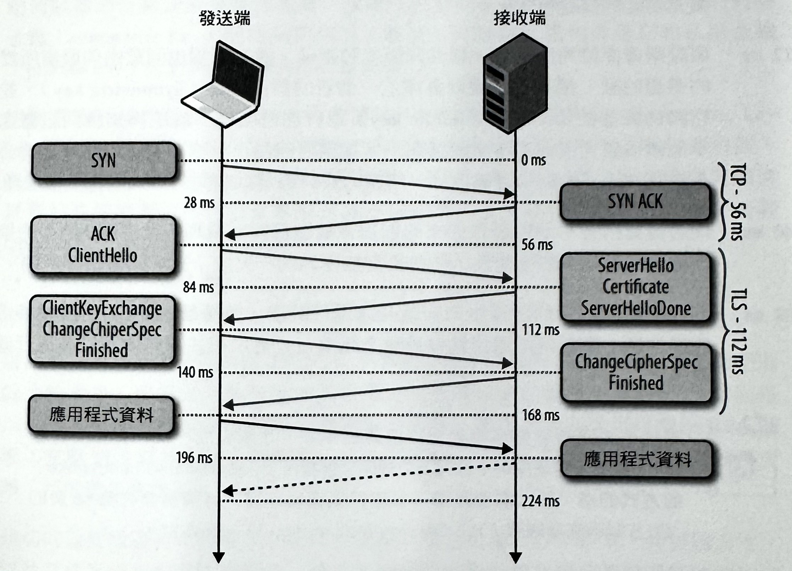圖2 就和之前的 TCP 連線一樣，是以表1 為例，來假設紐約和倫敦之間的單向光纖延遲時間都是 28 毫秒。
-
0 ms
TLS 是運作在一個可靠的傳輸方式（TCP）上，而這意味著我們必須先花上一個完𤨣的往返傳輸作業，來完成 TCP 三向交握程序。
-
56 ms
有了 TCP 連線之後，客戶端會以純文字的形式來發送一些規格資訊，像是目前要使用的TLS 協定版本、有支援的密碼組清單，還有其他可能會用到的TLS選項。
-
84 ms
伺服器會針對更進一步的通訊作業，挑出要使用的 TLS 版本，並從客戶端所提供的清單當中，選用一組密碼組，再將它附加到自己的憑證上，然後把回應訊息發送給客戶端。或者，伺服器也可以對客戶端發出請求來索取憑證和 TLS 擴充功能的其他參數。
-
112 ms
假設兩邊都能夠協商出一種共同版本和密碼，而客戶端也同意由伺服器所提供的憑證的話，接著客戶端就會產生一個新的對稱金鑰（symmetric key），並將它與伺服器的公開金鑰（public key）進行加密處理，最後再知會伺服器進一步地轉換到加密通訊作業的通訊上。截至目前為止，除了剛剛以伺服器的公開金鑰所加密過的對稱金鑰以外，所有的資料都是以明文的形式進行交換處理。
-
140 ms
伺服器會對客戶端所發送而來的對稱金鑰進行解密處理，並搭配 MAC 的檢驗作業來檢查訊息的完整性，然後再把加密過的「完成」訊息回傳給客戶端。
-
168 ms
客戶端會搭配之前所產生的對稱金鑰進行解密，並檢驗 MAC，然後如果正確無誤的話，整個傳輸通道就會被建立起來，而應用程式資料就可以被進行傳送處理了。
新 的TLS 連線需要經過兩次往返傳輸作業，才能完成一次「完整交握程序」。然而，要是採用一種名為「簡略交握程序」（abbieviated handshake）的方式的話，就只需要經過一次的往返傳輸作業。
安全 TLS 的協商作業是一項挺複雜的程序，而且很容易出錯。所幸，剛剛所描述的那些所有處理工作，都會由伺服器和瀏覽器來幫我們完成，而我們所必須做的，就是去進行憑證的提供和設定處理。
總之，雖然我們的網頁應用程式不一定都要去驅動先前的交換作業，但是它還是得讓每個 TLS 連線，在 TCP 交握程序上執行兩個額外的往返傳輸作業才行一因此，在應用程式資料可以被進行交換處理之前，得先等上好一段時間！要是沒有小心控管好的話，透過 TLS 來進行應用程式資料的傳輸作業，還可能會再增加上百，甚至是上千毫秒的網路延遲時間。
公開和對稱金鑰的加密處理效能
「公開金鑰加密作業」（public-key cryptography）就只有在 TLS 通道的議程設定程序當中被使用到。伺服器會把它的公開金鑰提供給客戶端，接著客戶端會搭配伺服器的公開金鑰來進行加密，而產生出對稱金鑰，然後再把加密過的對稱金鑰（symmetric key）回傳給伺服器。最後，伺服器就能夠透過它的私用金鑰（private key）來對對稱金鑰進行解密處理。
使用著客戶端所產生出來的共用密鑰的「對稱密鑰加密作業」（symmetric key cryptography），會在客戶端與伺服器之間的所有後續通訊作業中都會被使用到。 在大多數情況下，這樣做將可以提升效能一而相對來說，公開金鑰加密作業則會耗費較高的計算成本。若要瞭解這當中的差異，你可以在自己的電腦當中安裝 OpenSSL，並進行以下這些測試：
- $> openssl speed rsa
- $> openssl speed aes
請注意一下，在這兩項測試之間的單位是無法直接比較的：RSA 測試會針對不同的金鑰大小，來提供一份每秒會進行多少次運算作業的總表，而 AES 效能則是以每秒處理多少個位元組的單位來表示。不過，應該很容易就可以看出 RSA 運算（完整 TLS 交握程序）的數值，而在所建議的 1,024 或 2,048 位元的金鑰長度時，可能就是瓶頸了。
確切的效能數值有可能會因為使用的硬體、核心數量、TLS 版本，伺服器設定，以及其他因素，而有明顯差異。總之，千萬別任意相信市調或某份過時的效能測試結果！只有在自己的機器上實際進行效能測試，才是最真實的。
應用層協定協商作業 (Application Layer Protocol Negotiation, ALPN)
兩個網路節點可能會想要去使用一個自訂的應用程式協定，來進行相互間的通訊作業。解決方法之一，就是決定在協定前期，指派一個標準通訊埠給它（如80號通訊埠給HTTP，而443 號通訊埠給 TLS），並將所有客戶端和伺服器都設定好去使用它。只是，在實際應用上，這是個緩慢且不切實際的過程：每個通訊埠的指派作業都必須經過批准，而且更糟糕的是，防火牆和其他中介裝置通常只會允許透過 port 80（80號通訊埠）和 port 443（443號通訊埠）的網路流量。
最後，若要能輕易啟用自訂協定，我們就必須重複使用 port 80或 port 443，並使用額外機制來進行應用層協定的協商作業。port 80是保留給 HTTP，而HTTP 規範會針對這個用途，提供一份特殊「升級」（Upgrade）流程。不過，使用這個「升級」，將可能增加額外的網路往返延遲，因此實際上，在有許多中介裝置的情況下，這樣通常是不可靠的一相關細節，請參考《代理服器、中介裝置、TLS，以及網站上的新協定》區塊內容。
這個問題的解決方式，就是去使用保留給安全 HTTPS 議程（透過 TLS）的port 443。使用端對端加密通道來對中介代理伺服器的資料進行模糊處理，並啟用一種快速又可靠的方法，來部署最新的專用應用程式協定。然而，一旦我們要使用TLS 來解決可靠性，就還是得有個可用來進行協定協商作業的方法。
當然，一個 HTTPS 議程（session）會重複使用 HTTP 升級機制來執行必要協商作業，不過這樣做又會造成另一次的往返傳輸延遲。那麼，要是我們可以把協定協商作業當成是 TLS 交握程序本身的一部份呢？
就如同本節標題所隱含的那樣，「應用層協定協定」（Application Layer ProtocolNegotiation, ALPN）是一種TLS 的延伸，而它會把應用程式協定協商作業的支援能力，引入到 TLS 交握程序當中（如圖2），因此，就可以減少因為 HTTP 升級流程所需要增加的一次額外的往返傳輸作業。確切的程序如下：
- 客戶端會把一份存放著可支援應用程式協定的列表的新建 ProtocolNameList（協定名稱清單）欄位，附加到 ClientHello訊息裡頭。
- 伺服器會對 ProtocolNameList 欄位進行檢查，並將一個用來指出所選用協定的 ProtocolName（協定名稱）欄位當成 ServerHel1o訊息的一部分，回傳給客戶端。
伺服器可能只會回應一組協定名稱，而且要是它沒辦法支援客戶端的任何請求的話，可能就會選擇中止連線。根據結果，一旦 TLS 交握程序完成，雙方的安全通道也就被建立起來，而客戶端與伺服器雙方都同意要採用的應用程式協定之後，它們就可以立即開始進行通訊作業了。
雖然 ALPN 排除了對 HTTP 升級交換程序的需要，而省下了一次的額外往返延遲。但要注意的是，TLS 交握程序本身的執行作業還是不可避免一因此，ALPN 協商程序不可能會比透過非加密通道來進行的 HTTP 升級方式還快。換句話說，我們只能確定，透過 TLS 的應用程式協定協商作業並不會太慢。
NPN 與 ALPN 的歷史與關係
「NPN」 (Next Protocol Negotiation,次世代協定協商程序)是一種 TLS 的延伸。 這項協商程序是 Google 所研發，屬於 SPDY 的一部分，並且會在 TLS 交握期間，啟動有效的應用程式協定協商作業。是否感到有點似曾相識？沒錯，最後就跟 ALPN 具有相同的功能性。
ALPN 是屬 於被修訂過，並由 IEIF 所認可的 NPN 延伸版本。在 NPN裡頭，伺服器會把它所支援的協定給發佈出去，接著客戶端會去選擇，並確認要使用的協定。在 ALPN 裡頭，這項交換作業則是以相反方式進行的一客戶端會指定它所支援的協定，然後伺服器再去選擇和確認所要採用的協定。改變的基本考量在於，這樣做可以讓 ALPN 與其他的協定協商標準更加靠攏。
換句話說，ALPN 是 NPN 的一個繼承者，而 NPN 就不再適用了。依靠 NPN 協商機制的客戶端和伺服器，都必須被升級而改用 ALPN 來取代。
伺服器名稱指示（Server Name Indication, SNI）
一個加密的 TLS 通道可以在任何兩個 TCP 節點之間被建立起來：客戶端就只要知道準備連線的另一端的 IP 位址，即可執行 TLS 交握程序。然而，如果伺服器要在同一個 IP 位址上，主控多個含有自己的專屬 TLS 憑證的獨立網站的話，那樣會怎麼運作呢？一這個問題有點微妙，不過卻不會有問題。
為了解決上遮問題，TLS 協定採用了一種名為「何服器名稱指示，（Server Name Indication, SNI）的擴充功能，而讓客戶端在交握開始的時候，就指出要試圖去進行連線的主機名稱（hostname）。因此，伺服器就可以檢查 SNI 主機名稱來選用適當的憑證，再繼續進行交握作業。
TLS、HTTP 和專屬 IP
TLS+SNI 的工作流程，同樣都會使用 HTTP 裡的 Host標頭公告，而客戶端會在這裡頭指出它所請求的網站的主機名稱一相同的IP 位址可以主控多個不同的網域（domain），而 SNI 和 Host 都必須能夠從它們當中辦別出來。
遺憾的是，許多舊的客戶端程式（如 Windows XP 下的大多數IE 瀏覽器、Android2.2 等等）都沒有支援 SNI。因此，假如你必須對這些較舊的客戶端提供TLS的話，你可能就需要針對每個網站都個別指定一個專屬 IP 位址(dedicated IP address ) 。
TLS 議程恢復機制（TLS Session Resumption）
完整的 TLS 交握程序的額外延遲和運算成本，會讓所有需要採用安全通訊功能的應用程式，帶來嚴重的效能負擔。為了稍微減輕這類成本，TLS 提供了一種可在多個連線之間，恢復或共用同一組協商過的金鑰資料的能力。
議程識別資訊（Session Identifiers）
最初的議程識別資訊（Session Identifiers，RFC 5246）恢復機制是在 SSL 2.0 裡頭被提出的，而這個機制允許伺服器在我們之前看過的整個 TLS 協商作業期間，產生一個 32個位元組大小的議程識別資訊，並將它當成 ServerHello 訊息的一部份來進行發送。
在那當中，伺服器可以為每個節點，維護一份議程 ID （session ID）和已協商議程參數的快取資訊。此時，客戶端也可以為接下來的議程，保存議程ID 資訊，並在 ClientHello 訊息裡引用那個 ID，以便用來讓伺服器知道，該客戶端仍然記得之前交握程序當中所協商過的密碼組和金鑰，進而能夠重複使用它們。假設客戶端和伺服器都能夠在它們個別的快取當中，找到共用的議程 ID 參數的話，就可以採取「簡略交握程序」（abbreviated handshake）（如圖-3）。否則，就得進行一個至新的議程協商作業，來產生出一個新的議程 ID。
圖3 TLS簡略交握協定:
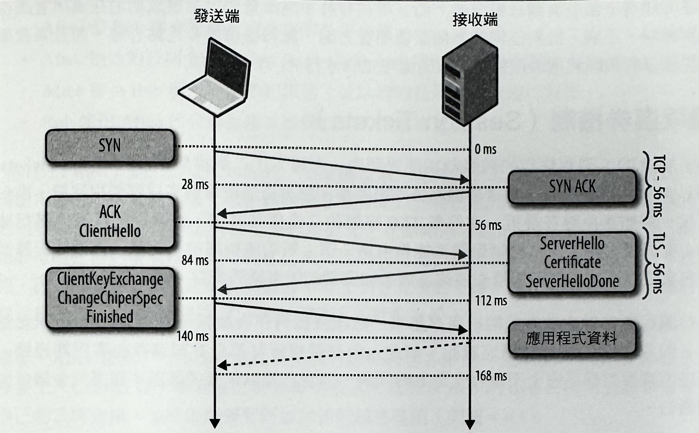啟用議程識別資訊，讓我們能夠節省一次的往返傳輸作業，還有進行共用金鑰協商作業的公開金鑰加密的處理成本。這使得安連線可以被快速地建立起來，並能保有原本的安全性，因為我們會重複使用先前協商過的那些議程資料。
實際上，大多數的網頁應用程式都會試圖對同一個主機，建立起多個連線來同步取得多項資源，而使得議程恢復機制成為用來降低連線雙方的傳輸延遲和運算成本的最佳化方式。
大部分的最新瀏覽器都會故意先等待第一個 TLS 連線被成功建立起來之後，才對同一台伺服器開啟新的連線一後續的 TLS 連線則可以重複使用 SSL 議程參數來避免多餘的交握作業。
然而，議程識別機制的實際限制之一，就是需要伺服器去為每個客戶端建立並維護一組議程快取資訊。這樣做很可能會讓你每天都在伺服器上看到數萬，甚至數百萬個獨一無二的連線，以致於會造成不少問題一包括每個開啟的 TLS 連線所消耗的記憶體、針對議程 ID 快取和回收方針的需求，以及為了最佳執行效能，理想上該對熱門網站搭配多台會運用一個共用 TLS 議程快取功能的伺服器，而帶來的非比尋常的部署挑戰。
上述問題幾乎都是有辦法解決的，而且現在有許多高流量網站都復成功地在運用著議程識別機制。不過，針對任何的多伺服器部署方面，就得審慎地多花點心思，而且系微架構要確保能夠順利地進行議程快取的處理工作才行。
議程票券機制（Session Tickets）
為了解決 TLS 議程快取的伺服器端部署問題，而導入了「議程票券」（Session Tickets，RFC 5077）更換機制，而這項機制將不再要求伺服器去追蹤每個客戶端議程狀態。換句話說，假如客戶端在最近一次完整 TLS 交握的交換作業當中，被識別出具有「議程票券」支援能力的話，那麼伺服器就能夠引用一筆「新的議程票券」紀錄，而這筆記錄當中包含了以一組只有伺服器知道的金鑰所加密過的所有議程資料。
這份議程票劵就會被客戶端給保存起來，然後就能夠在後續議程的 CIientHello 訊息當中，引入 SessionTicket 擴充資訊。如此，所有議程資料都只會被儲存在客戶端裡頭，但這個議程票券卻完全不會有安全上的問題一因為它是以只有伺服器才知道的金鑰所加密過的。
「議程識別資訊」（session identifiers）和「議程票券」（session ticket）機制，通常會被分別稱做是「議程快取」（session caching）和「無態恢復機制」（stateless resumption）。無態恢復機制的主要改善重點，是不再需要用到伺服器端快取功能，而這個機制會透過要求客戶端在針對伺服器的每個新增連線上，都去提供相對應的議程票券的方式，來簡化部署作業，一旦票券過期，就再更換新的票券即可。
實際上，在一組負載平衡伺服器上部署議程票券，也需要多費點心思在系統架構上一所有的伺服器都必須是以相同的議程金鑰來進行初始化，而且在這當中可能還需要用到一項額外的機制一讓所有伺服器定期地輪流使用共用金鑰。
信任鏈與憑證授權機構
「授權」（authentication）是屬於建立每個 TLS 連線的處理作業當中一部分。畢竟，我們可能會透過某個加密通道來與任何節點，甚至是某個惡意攻擊者進行對話。除非我們可以確定，目前與我們對話中的電腦是我們所信任的對象，否則所有的加密工作幾乎只是在做自工而已。為了瞭解我們可以用來檢驗節點身份的方法，就讓我們來看看 Alice 和 Bob 之間的簡單授權流程：
- Alice 和 Bob 都會產生他們自己的公開和私用金鑰。
- Alice 和 Bob 都會隱藏他們各自的私用金鑰。
- Alice 把她的公開金鑰分享給 Bob，而Bob 也把他自己的分享給 Alice。
- Alice 會為 Bob 產生一個新的訊息，並以她的私用金鑰來進行簽署。
- Bob 使用 Alice 的公開金鑰來檢驗到的訊息簽署資訊。
「信任」（trust）是上述交流過程的一項關鍵要素。尤其是，公開金鑰加密作業讓我們能夠使用發送者的公開金錀，來檢驗該訊息確實是以正確的私用金鑰所簽署的，但是同意發送者的決定，仍然是建構在信任的基礎上。在剛剛所示範的交流過程當中，Alice 和 Bob 可能在他們當面碰到的時候就已經交換過各自的公開金鑰，而且由於他們原本就認識，因此他們可以肯定之間的交流並不會受到冒充者的干授一或許他們透過另一種之前就已經建立好的秘密握手方式，而驗證過了彼此的身份！
接著，Alice 接到了一個來自她從未見過，卻聲稱是 Bob 的一位朋友的 Charlie 的訊息。事實上，Charlie 為了證明自己是 Bob 的朋友，就要求 Bob 以 Bob 的私用金鑰來簽署他自己的公開金鑰，並將這份簽署附加到他的訊息裡頭（如圖4-4）。
在這個情況下，Alice 會先查在 Charlie 的金鑰上的 Bob 的簽署。她認得 Bob 的公開金鑰，因此就能夠去查證 Bob 確實有對 Charlie 的金鑰進行簽署。由於她信任 Bob 的決定而去對 Charlie 進行查核，因此她就會接受訊息，並在Charlie 的訊息上執行一個類似的完整性檢查作業，以確保該訊息確實是出自於 Charlie 之手。
圖4: Alice、Bob，和 Charlie 的信任鏈
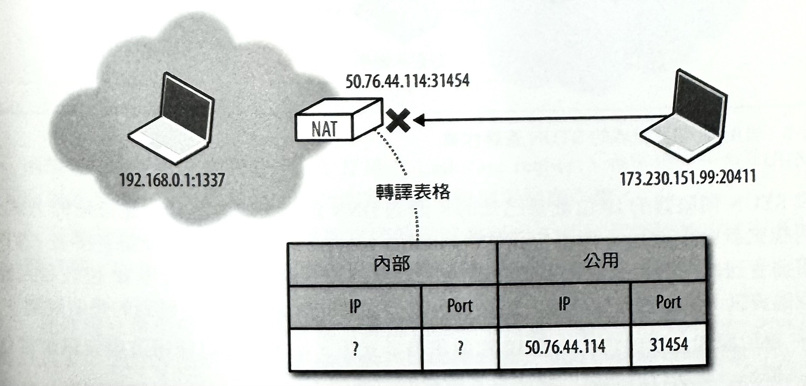我們剛剛所完成的，是在進行一個信任鏈的建立作業：Alice 信任Bob，而Bob 信任 Charlie，因此藉由信任轉移的過程，Alice 就決定信任 Charlie。只要信任鏈裡頭沒有人受到危害，就能夠讓我們去建立並發展出信任伙伴清單。
網站上和瀏覽器裡的驗證作業，就是依循剛剛所呈現的相同程序。此時。你應該會想知道：你的者覽器所信任的是誰？而當你在使用瀏覽器時，你要信任的又是誰呢？針對這 個問題，至少會有三個答案：
-
手動指定的憑證
每個瀏覽器和作業系統，都會提供一種可以讓你親手去匯入你所信任的任何憑證的機制。至於憑證的取得和完整性的檢驗方式，則完全由你自己決定。
-
憑證授權機構（CA）
憑證授權機構（Certificate authority, CA）是一個由憑證主體（擁有者）和要仰賴憑證的當事者雙方所共同信任的一個第三方單位。
-
瀏覽器和作業系統
每個作業系統和大多數瀏覽器，都會附帶著一份知名憑證授權單位的列表。因此，你也會信任這套軟體的開發者，所提供與維護的那份受信任伙伴列表。
其實，要對每個網站都一一地去保存，並親自進行檢驗的作法是有點不切實際（不過，只要你願意的話，你是可以這樣做的）。因此，大多數的常見解決方式，就是去使用憑證授權單位（CA）來為我們進行這項工作（如圖-5）：瀏覽器會指定要信任的CA（根 CA），而該CA 就會負責去檢驗它們所簽署的每個網站，並審查與查證這些憑證沒有遭到濫用或損害。假如有含有 CA 憑證的任何網站的安全性遭到破壞的話，那麽該 CA 也會負責撒銷掉遭到破壞的憑證。
圖5: 數位憑證的 CA簽署程序
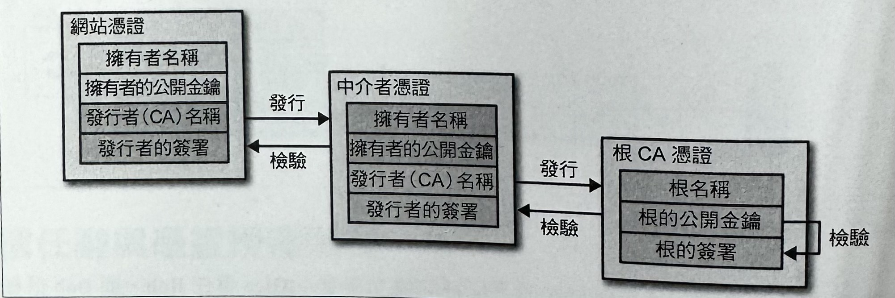每價瀏覽器都允許你去檢查在你自己的安全連線的信任鏈（如圖-6），而通常你可以透過點按網址列旁邊的鎖頭圖示來存取相關資訊。
圖6: 對 igvita.com 所核發的信任鏈憑證（Google Chrome, v25）
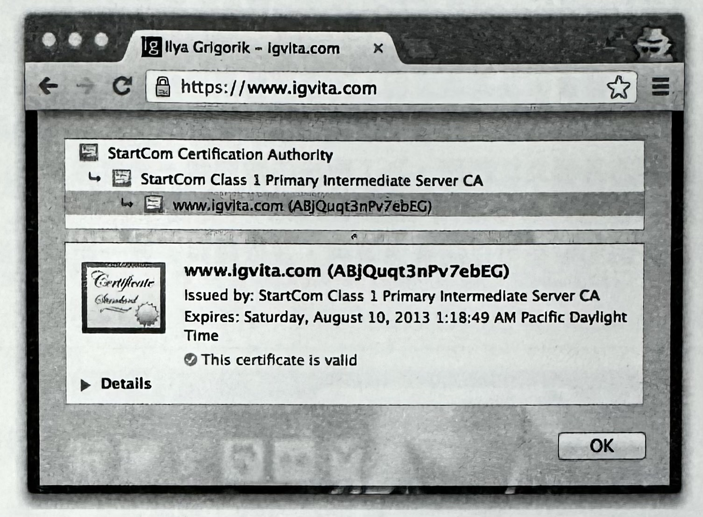- igvita.com 憑證是由 StartCom Class 1 Primary Intermediate Server 所簽署。
- StartCom Class 1 Primary Intermediate Server 憑證是由 StartCom CertificationAuthority 所簽署。
- StartCom Certification Authority 是一家公認的憑證授權機構。
整個信任鏈的「信任錨」（trust anchor）就是根憑證授權機構，而在剛剛所示範的案例當中，就是指 StartCom Certification Authority。每個瀏覽器都會附帶一組公認憑證授權機構的預設列表（也就是所謂的「根」），而在這個案例當中，瀏覽器信任 StartCom 根憑證，並且能夠去對它進行檢驗。因此，透過從瀏覽器、瀏覽器開發者，到 StartCom 憑證機構所構成的信任轉移鏈，我們就能夠把信任延伸到我們的目標網站了。
每個作業系統廠商和瀏覽器都會提供一份他們所信任的憑證授權機構的預設公開清單。假如你有興趣的話，可以使用自己偏好的搜尋引擎去尋找並調查這些清單。
實際上，知名且公認的憑證授權機構有數百家，其中當然也不乏對系統有所不滿的單位機構。此外，過多的 CA 還會讓你瀏覽器的信任鏈暴露出更多的潛在攻擊機會。
憑證撤銷（Certificate Revocation）
有時候，憑證發行者可能會因為某些原因，而必須將發出的憑證給撤銷掉或宣告失效。例如，憑證的私鑰遭到洩漏、憑證機構撤消對憑證的授權，或者是更要更換憑證。為了瞭解憑證的有效性，憑證使用者在使用憑證時，應該查詢可靠的機制來確保它們是否還有效的詳細資訊（instructions）（如圖 -7）。以確保信任憑證機構發出的憑證。每個憑證機構可以發佈憑證撤銷清單，並在數據庫裡的一段內容來檢查每個憑證的狀態。
圖7: igvita.com 的 CRL 和 OCSP 命令（Google Chrome, v25））
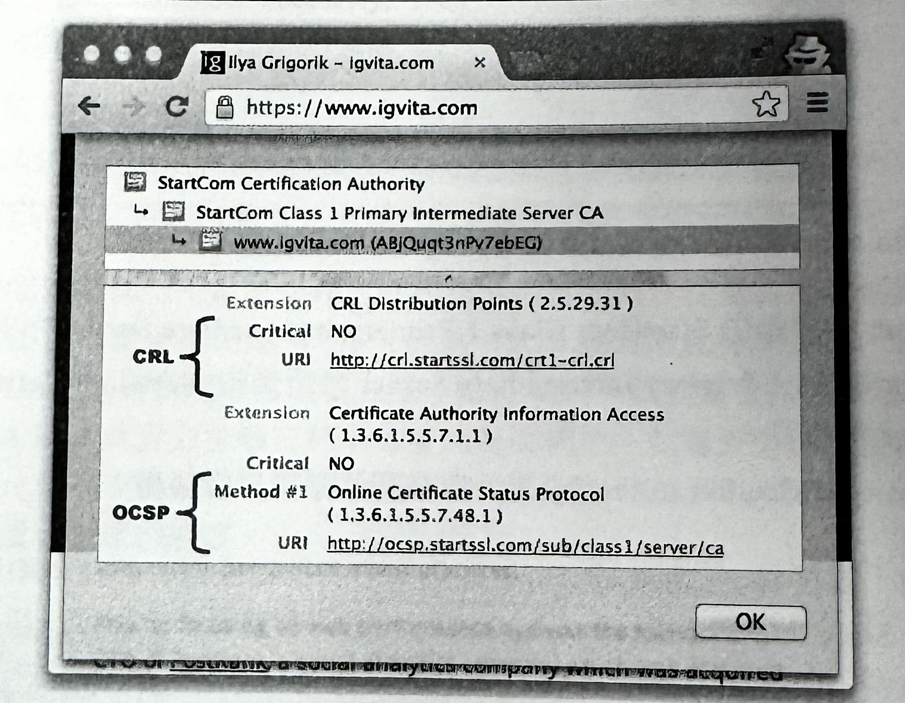憑證撤銷清單（CRL）
「憑證撤銷清單」（Certificate Revocation List, CRL）是由 RFC 5280 所定義，並且指定了一種可用來檢查每個憑證狀態的簡單機制。每個憑證機構維護並定期地發佈一份已撤銷憑證的清單。任何相關設備去檢驗某個憑證的時候，都能夠去下載撤銷清單，並核對清單裡的序號內容—假如要檢查的序號有出現在清單裡的話，就表示他已經被撤銷掉了。
CRL 檔案本身可以被定期發佈或是在每天的更新檔中，並且可以透過 HTTP 或其他檔案傳輸機制來進行傳輸。這份清單由 CA 來進行發行，而且通常能夠根據其內容的簽名來確保它的完整性與真實性。這個機制在確定憑證的撤銷情形很精確，但是在某些場合底下，CRL 機制可能就不適用了：
- 大幅成長的撒銷數，意味著 CRL 清單也會越變越長，而每個客戶端必須取得序號的完整清單。
- 對於憑證撒銷狀況，並沒有任何的即時提醒機制一假如 CRL 是客戶端在憑證被撤銷之前就已經先進行快取的話，那麼在快取過期之前，CRL 仍然會把已撤銷的憑證當作是有效的。
線上憑證狀態協定（OCSP）
為了改善 CRL 機制的某些限制,RFC 2560導入了名為「線上憑證狀態協定」(Certificate Status Protocol，OCSP), 而這個協定提供了一種可用來對憑證狀態進行即時查核處理的機制。這和需要握有所有已撒銷序號的 CRL 機制所不同是,OCSP 允許檢驗者在進行憑證鏈的驗證程序時,透過序號去直接對憑證資料庫進行查詢。
這樣的話,OCSP 機制應該會耗用較少的頻寬,而且還能夠提供即時的驗證結果。然而，沒有任何機制是完美的!即時 OCSP 查詢的執行需求,會對它本身造成一些問題：
- CA 必須要能夠掌控即時查詢的負載。
- CA 必須確定這項服務隨時都處於上線狀態,而且全球各地都能取用。
- 客戶端必須在進行導覽作業之前,先封鎖住 OCSP 請求。
- 即時 OCSP 請求可能會損害到客戶端的隱私,因為 CA 會知道客戶端正在造訪的網站。
實際上,CRL 和 OCSP 機制是相輔相成的,而大多數的憑證都會同時提供命令和終端節點資訊。 更重要的部份是,客戶端的支援能力和行為反應:某些瀏覽器會散布它自己的 CRL 清單,而其他瀏覽器則會從 CA 那裡取得並快取 CRL 檔案。同 的,某些瀏覽器會執行即時 OCSP 查核作業,只是會在OCSP 失敗時,做出不同的行為反應。假如有興趣的話,可以檢查一下自己的瀏覽器和作業系統的憑證撤銷機制設定!
TLS 記錄協定
和 IP 或在它底下的 TCP 層所不同的是，在 TLS 議程裡頭進行交換的所有資料，都是運用某種已明確定義的協定來進行規範的（如圖-8）。TLS 記錄協定（TLS RecordProtocol） 會負責識別各種不同的訊息類型（透過「Content Type」欄位來得知是屬於交握、提醒，或資料），進而對每個訊息進行安全處理和完整性的驗證作業。
圖8: TLS 紀錄結構
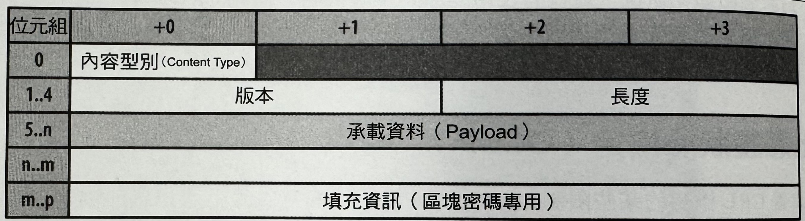以下是傳輸應用程式資料時的典型流程：
- 記錄協定收到應用程式資料。
- 已接收資料會被分割成好幾個區塊：每筆記錄最大長度為 2的 14次方個位元組，或者是 16KB。
- 應用程式資料可選擇是否有被壓縮處理。
- 訊息驗證代碼（MAC）或 HMAC 會被加入進來。
- 資料會運用已協商過的密碼來進行加密處理。
當這些步驟都完成後，已加密資料就會被往下傳遞給 TCP 層去進行傳輸處理。在接收端這邊，也存在相同的工作流程，只不過是以相反的次序來套用一運用協商過的密碼來對資料進行解密處理，接著則是驗證 MAC、對資料解壓縮，最後再把資料傳遞給在它之上的應用程式。
同樣的，剛剛所呈現的那些工作都是由 TLS 層本身去負責掌控，並且對大多數應用程式來說，整個處理過程都是完全透明的。然而，你應該會察覺到，記錄協定確實也帶進的幾項重要意含：
- TLS 記錄大小的最大值是 16KB。
- 每筆紀錄都會含有 5個位元組的標頭資訊、一個MAC（在SSLv3、TLS 1.0，和 TLS 1.1 會到 20 個位元組，而 TLS 1.2 則會到 32個位元組），以及採用區塊密碼時的填充資訊。
- 若要對記錄進行解密或驗證處理，整筆紀錄都必須是完全有效可用的。
假如可以的話，你應該好好地為你的應用程式挑選出適當的紀錄大小，因為這可以是個很好的最佳化方式。小型紀錄會因為許多的記錄分割處理而帶來大量的運算成本，但大型記錄則必須先透過 TCP 層來完成整個傳輸和重組作業，然後才可以被 TLS 層進行處理，進而遞送給你的應用程式。
TLS 的最佳化處理
由於網路協定的分層結構關係，透過 TLS 來執行應用程式的方式，與透過 TCP 來直接進行通訊並沒有什麼不同。因此，應用程式並不需要，或者只需要進行很小的改動，就可以透過 TLS 來進行資料傳輸處理。不過，前提是你已經運用了《TCP 的最佳化處理》當中提到的最佳慣例。
然而，你應該要先調查一下有關 TLS 部署上的處理作業：你要如何部署，以及要在哪裡部署你的伺服器、TLS 記錄和記憶體緩衝區的大小、憑證大小，以及簡略交握的支援能力等等。瞭解一下在你的伺服器上的這些參數設定情況，將有助於讓使用者體驗，以及操作成本，有更好的提升或改善。
運算成本
建立和維護一個加密通道，會對兩邊節點帶來一些額外的運算成本。更明確來說，首先是在 TLS 交握期間所使用到的非對稱（公開金鑰）加密作業。其次，一旦透過交握作業來建立起共用安全性，它就會被用來當作對所有 TLS 紀錄進行加密處理時的對稱金鑰。
就如同我們先前所提到的，公開金鑰密碼處理作業，與對稱金鑰密碼處理相較之下，需要更昂貴的運算成本，而在早期的網站應用上，通常還需要額外的硬體來執行「SSL 卸載處理」（SSL Offloading）。所幸，這種情況目前已不多見。最新的硬體都已經大幅提昇到有辦法協助將這些成本降到最低，而且這個額外硬體現在甚至可以直接在 CPU 上完成相關處理作業。像 Facebook 和 Google 這類需要對數億使用者提供 TLS 的大型組織機構，都會以軟體和各種硬體來執行所有必要的 TLS 協商和運算作業。
在今年（2010年）1月的時候，Gmail 針對所有傳輪作業。預設都會切換去使用 HTTPS。先前都是採取選擇性的方式，不過現在我們的所有使用者都會在自己的瀏覽器和 Google 之問，隨時使用 HTTPS 來保護他們自己的電子郵件。為了達到這個目的，我們必須以不需增加額外機器，也不會用到特珠硬體的方式進行部署。在我們生產的前端機器上，SSL/TLS 只會造成 1%以下的CPU負載、每個連線僅佔用 10KB 以下的記憶體，以及 2%以下的網路傳輪成本。很多人都以為，SSL/TLS 會耗掉很多 CPU 時間，而我們希望上述（首次公開）的數據有助於大家釐清這個誤解。 假如你不打算繼續研究其他相關細節的話，那就只要記住一個重點：SSL/TLS 的運算成本已經不那麼昂貴了。 -Adam Langley ( Google)
我們已經運用硬體和軟體負載平衡系統，來大規模地部署 TLS。我們已經發現，執行在一般 CPU 上的最新軟體 TLS 實作功能，已經可以在不需要採用專屬加密硬體的情況下，就足以處理大量的 HTTPS 流量負載。 因此，我們會善用執行在一般硬體上的軟體，來處理所有的HTTPS 資料流量。 -Doug Beaver (Facebook)
儘管如此，然而類似《TLS 議程恢復機制》的技術，仍然是在 TLS 交握期間，可用來協助你去降低運算成本和公開金鑰加密處理的延遲時間的重要最佳化方法。畢竟，沒有理由把CPU 資源給浪費在不需要你去經手處理的工作上。
關於 CPU 週期的最佳化處理方面，你得先確實地將你的 SSL 程式庫給更新到最新版本，並且搭配它們來建置你的伺服器和代理伺服器。也就是說，只要近期的 OpenSSL 版本在效能上有大幅提昇效果，那麼你系統原本預設的 OpenSSL 程式庫可能就落伍了。
及早終止機制
對於每個新的，或重新恢復的 TLS 連線，所產生的連線設定延遲部分，都是最佳化處理的重要範圍。首先，回想一下，每個 TCP 連線都會先從一次的三向交握程序開始，而這項程序得針對 SYN/SYN-ACK 封包，花上一次完整的往返傳輸作業。接著，TLS 交握針對整個處理程序，還得花上兩次額外的往返傳輸，或者在 TLS 議程恢復機制處於可用的情況下，也得花上一次的往返傳輸作業。
在最壞的情況下，任何應用程式資料可以開始被進行交換處理之前，TCP 和 TLS 連線設定程序就會花上三次的往返傳輸作業了！根據之前那個在紐約的客戶端與倫敦的伺服器的範例當中，每次往返時間為56毫秒（請參考表1）。這表示，整個 TCP 和 TLS設定需要花上168毫秒，而重新恢復 TLS 議程則耗掉了112 毫秒。更糟糕的是，端點之間的延遲時間越高，傳輸的代價還會更高，因此這個56毫秒顯然只是個樂觀的理想數值而已呢！
由於所有 TLS 議程都會透過 TCP 方式，因此先前《TCP 的最佳化處理》內容的所有建議，套用在此也一樣有效。假如 TCP 連線重複使用機制對於非加密流量來說，是個有用的考慮方案，那麼對於所有使用著 TLS 的應用程式來說，也會是個重要的最佳化方案一要是你可以避免去進行處理交握作業的話，那就把它省掉。不過，要是你還是得執行交握作業的話，你或許會想去研究一下「及早終止」（early termination）技術。
我們無法預期延遲時間在未來能有什麼大幅度的提升，因為我們的封包已經是以光速的一個很小的常數係數在進行傳輸了。然而，雖然我們可能沒辦法讓封包的傳輸速度更快，但是我們可以讓它們的傳輸距離更短！「及早終止」（early termination）就是藉由把你的伺服器擺得更接近你的使用者（如圖-9），而讓客戶端和服器之間的每個往返延遲成本達到最小化的一種技巧。
圖9: 客戶端連線的「及早終止」機制
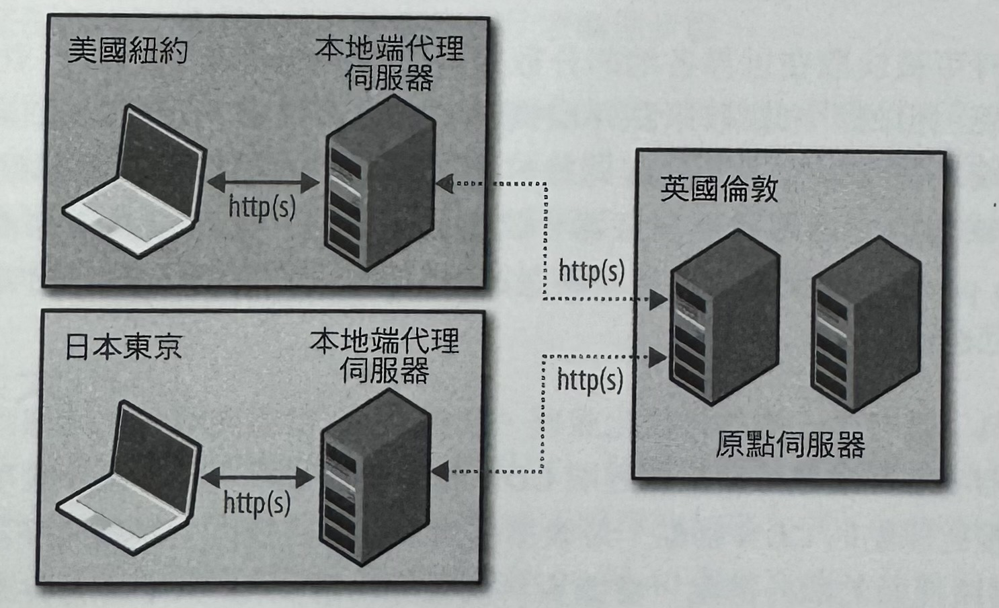實現這項作法的最簡單方式，就是把伺服器上的資料和服務給複製或快取到世界各地，以取代原本去強迫每個使用者得跨越長距離的海陸纜線，來與原始伺服器進行資料傳輸處理的方式。當然，這是一項很棒的服務，而且是由預先設定好的許多內容傳輸網路（content delivery networks, CDNs）來提供。然而，採取地點分散式的伺服器使用策略，並不只是在縮短靜態資料的傳輸作業而已。
一部近端伺服器還能夠結束 TLS 議程，以致於可以讓 TCP 和 TLS 交握程序的往返作業變得更快，而且總連線設定的延遲時間也會被大幅減少。接著，同一台近端伺服器就可以與原點伺服器（origin server）建立起一個長期安全連線池，進而去對原點伺服器的請求，以及來自原點伺服器的回應進行代理處理。
總括來說，把伺服器移得更接近客戶端，即可加速 TCP 和 TLS 交握程序！大多數 CDN 供應商都會提供這樣的服務，而且假如你想更積極一點的話，也可以用最小的成本來部署你自己專的網路基礎建設：以幾個分佈在世界各地的資料中心來建構雲端伺服器，並設定每台代理伺服器來把請求轉送到你的原點伺服器，接著再加上地區 DNS 負載平衡機制，然後你就可以開始正式營運了。
未快取原點擷取機制
運用一部 CDN 或代理伺服器時，需要為每個使用者進行客製化處理，或者得存放其他私有資料，才能擷取某個（無法進行全球快取處理的）資源的處理技術，就是所謂的「未快取原點擷取機制」（uncached origin fetch）。
雖然當資料可被快取在世界各地的分散式伺服器的場合底下，CDN 就能夠有相當好的表現，但是「未快取原點存取機制」還是可以帶來很好的最佳化效果一因為客戶端連線可以被近端伺服器給終止掉，進而大幅降低交握延渥成本。接著，CDN 或是你的專屬代理伺服器，就能夠去維護一個「溫熱連線池」（warm connection pool），以便用來把資料轉送給原點伺服器，而讓你可以對客戶端傳回一個快速回應訊息。
實際上，為了進行多一層的最佳化處理，某些 CDN 供應商還會在連線兩邊都使用近端伺服器！客戶端連線在某個近端CDN 節點裡頭被終止掉之後，該項請求就會被轉送至接近原點的 CDN 節點，最後那個請求就會被繞徑至原點伺服器。此外，在 CDN 網路裡頭的額外節點，會讓資料流量經由最佳化的 CDN 骨幹來進行繞徑處理，進而能夠協助去降低客戶端和原點伺服器之間的延遲時間。
議程快取和無態恢復機制
將貼近使用者的連線給終止掉，是有助於在任何狀況下降低你的使用者的延遲時間的一種最佳化方式，但是同樣的，別讓後面的資料傳得比之前尚未被送出的資料還快一發送得稍微慢一點即可。啟動 TLS 議程快取（session caching）和無態恢復機制（stateless resumption）將讓你可以去對重複的訪客，省去一次完整的往返時間。
TLS 議程快取機制所仰賴的議程識別資訊 （session identifiers）是在 SSL 2.0 裡頭所導入的，而且已經被大多數客戶端和伺服器所廣泛支援。然而，假如你正在為你的伺服器設定 SSL/TLS 的話，記得別假設議程支援能力是被預設啟用的。事實上，大多數的伺服器通常都把它預設為關閉狀態一你應該要仔細檢查，並檢驗你的設定情況：
- 多程序或工作機器的伺服器應該要使用一個共用議程快取空間。
- 共用議程快取的大小應該配合你的流量等級來做調整。
- 應該提供議程逾時週期。
- 在一個多伺服器的設定作業當中，將相同客戶端 IP，或相同 TLS 議程 ID 給繞徑到同一個伺服器的作法，是用來提供良好議程快取機制的一種方式。
- 當負載平衡機制不適用的場合當中，不同伺服器之間應該使用共用快取機制來提供良好的議程快取機制。
- 為了效能上的考量，需要檢查並監控你的 SSL/TLS 議程快取統計資料。
另外，假如客戶端和伺服器都支援議程票券機制的話，所有的議程資料都將會被保存在客戶端，而這部份極為簡單，並不需要進行什麼處理步驟。
然而，因為議程票券是 TLS 裡相對較新的擴充功能，因此並不是所有的客戶端都有支援。實際上，最好的方式是你把兩個機制全都啟用一議程票券可讓有支援能力的客戶端加以運用，而議程識別資訊則可以用來當作舊版客戶端的備援功能。這些機制並不會互相排斥，而且可以一起運作得很好。
TLS 記錄大小
所有透過TLS 來傳輸的應用程式資料，都是在一個記錄協定當中被進行傳輸的（如圖-8）。每筆記錄的最大長度是16 KB，而根據所選擇的加密方式，每筆記錄還會針對標頭、MAC，和選擇性的填充資料，另外多增加 20到 40個位元組。假如紀錄資料之後被放進一個單獨的TCP 封包裡頭的話，我們還得再加上 IP 和 TCP 的額外代價：IP 部分需要用到 20個位元組的標頭資料，而 TCP 在沒有任何選項功能的情況下，同樣也需要用到 20個位元組的標頭資料。結果，每筆記錄的總成本很可能就需要用到 60 到 100個位元組。針對線上最大傳輸單位（maximum transmission unit, MTU）為1,500個位元組的情況來看，這個封包結構就佔用了最少 6%的訊框處理傳輸成本（framing Overhead）。
圖10: WireShark 擷取到 11,211 個位元組的 TLS 記錄，而這筆記錄被分割成 8個 TCP 區段來進行傳送
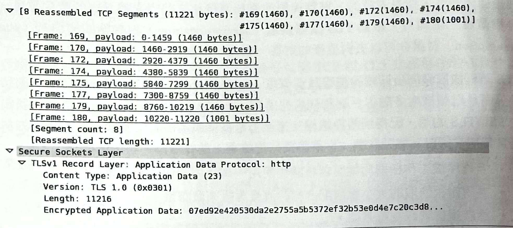越小的記錄，就需要越多的訊框處理成本。然而，單純把記錄的大小提升到它的最大值（16 KB）並不是個好辦法！要是記錄會跨越多個 TCP 封包，TLS 層就得等到所有封包全都到達之後，才可以開始進行資料的解密處理（如圖-10）。假如其中有個 TCP 封包因為阻塞控制而發生遺失、被重新排序，或者被進行調節處理的話，那麼 TLS 記錄的個別片段就必須在它們可以被進行解碼處理之前，先進行緩衝處理，因而造成額外的傳輸延遲。實際上，這些延遲都可能會對瀏覽器造成很大的瓶頸問題，而這樣的效率還不如盡可能地採取一個位元組接著一個位元組的方式來處理資料。
小的記錄會增加處理成本，而大的記錄會產生傳輸延遲，因此對於「記錄大小」的部分，也就沒有所謂的「正確」答案。不過，對於以瀏覽器來進行處理的網頁應用程式來說，建議的最佳價例很簡單：每個 TCP 封包都應該確實地攜帶一筆 TLS 紀錄，而 TLS 記錄應該佔滿 TCP 所分配的整個最大區段大小 （maximum segment size, MSS）。換句話說，不要使用會跨越多個 TCP 封包的 TLS 記錄大小，並且盡可能在每一筆記錄當中，運送更多的資料。若要為你的部署狀況決定最佳 TLS 記錄大小的話，可以參考底下建議：
- 針對 IPv4 訊框處理成本配置 20個位元組，而對 IPv6配置40個位元組。
- 針對 TCP 訊框處理成本配置 20個位元組。
- 針對 TCP 選項成本（時間戳記、SACK 資訊）配置40個位元組。
假設一開始是以 MTU 的 1,500 個位元組的方式來進行，以IPv4 來傳輸就會為 TLS 紀錄留下 1.420 個位元組，而使用IPv6 則會留下 1,400 個位元組。基於對未來支援情況的考量，會採用 IPv6 的大小：1,400 個位元組，或者如果你的MTU 較低的話，則要選用更小的數值。
然而，TLS 記錄大小的設定作業，並不是我們可以從應用層去進行控制的。換句話說，這項設定，很可能是在你的 TLS 伺服器上的一個編譯常數或旗標。關於更新這個值的細節說明，請參考你的伺服器的說明文件。
假如你的伺服器正在處理大量的 TLS 連線的話，那麼把每個連線的記憶體使用量降到最低，將會呈現出理根的最佳化效果。在預設情況下，像 OpenSSL 之類的熱門程式庫都會為每個連線分配 50KB 的記憶體大小，不過這與記錄大小有關，因此最好可以去查閱一下有關調整這個值的說明文件或原始碼。舉例來說，Google 伺服器會把他們的 OpenSSL 緩衝區，調低至 5KB。
TLS 壓縮程序
TLS 有個鮮為人知的功能特色，就是內建可以對記錄協定所傳輸的資料進行無損壓縮處理（lossless compression）的支援能力一壓縮演算法是在 TLS 交握期間所協商出來的，而這項壓縮作業早在每筆記錄被進行加密之前，就先被套用上去。然而，實際上，基於底下幾個原因，你應該把伺服器上的 TLS 壓縮功能給關掉：
- 在2012年所公布的「CRIME」（Compression Ratio Info-Leak Mass Exploitation，壓縮率資訊洩漏大量剝削）攻擊手法，會啟用 TLS 壓縮功能來重新取得安全認證 記錄（secret authentication cookies），進而讓攻擊者去執行議程綁架行為(session hijacking)
- 傳輸層等級的 TLS 壓縮情況是無法從傳輸內容察覺的，而且最後還得試圖去對已壓縮資料（圖片、視訊等等）進行解壓縮處理。
雙倍的壓縮作業，將會浪費伺服器與客戶端兩邊的 CPU 時間，而且安全漏洞問題也十分嚴重，因此最好還是關掉 TLS 壓縮功能。在實際狀況中，大部份瀏覽器都會關閉 TLS 壓縮的支援功能，而你應該確實地在你的伺服器設定裡頭，關掉這項功能，以保護你的使用者。
為取代 TLS 壓縮功能，請確實地將你的伺服器做好設定，來護它針對所有的文字型內容進行 Gzip 壓縮，而對圖片、視訊和音訊之類的其他所有媒體，採用某種最佳的壓縮格式。
憑證鏈的長度
信任鏈的檢驗程序需要瀏覽器去對整個資料鏈進行尋訪，因此會從網站憑證開始，然後以遞迴的方式來檢驗上層憑證，直到到達受信任的根憑證為止。因此，你應該去進行的第一項最佳化作業，就是查證伺服器在執行交握程序時，並沒有忘了引入所有的中介憑證。假如你忘了這樣做的話，許多瀏覽器還是能夠運作，但是它們將會被迫暫停進行檢驗作業，接著會去擷取在它們自己身上的中介憑證，並在檢驗完成後，才又繼續執行下去。這樣的過程非常有可能需要用到一個新的 DNS 查詢（lookup）、TCP 連線，以及一個 HTTP GET 請求，而這樣將會在你的交握程序當中，增加數百毫秒的延遲時間。
瀏覽器要如何知道從哪裡去取得中介憑證呢？後代憑證（child certificate）通常都會含有親代憑證（parent）的URL位址。
相反地，確定你沒有在信任鍵中引入那些不必要的憑證！或者，更廣泛地來說，你應該致力於讓你的憑證鏈（certificate chain）的大小越小越好。請記住，何服器憑證是在 TLS 交握期間被進行發送的，而這個交握程序很可能是執行在它的緩步啟動演算法的早期階段裡的一個新的 TCP 連線上。假如憑證鏈超過 TCP 的初始擁塞視窗的話（如圖-11），我們將會不小心地在交握程序上，多增加了另一個往返傳輸作業一此時，憑證長度將會超出擁塞視窗，而造成伺服器在繼續處理之前，得先停下來等候一個客戶端 ACK 訊號。
圖11: WireShark 擷取到的 5,323 個位元組的 TLS 憑證鏈
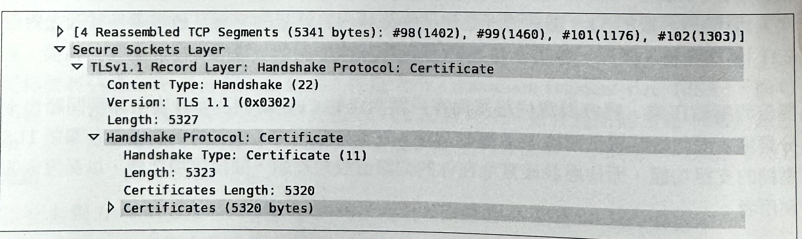在圖-11 裡的憑證鏈超過 5KB大小，而這已經超過舊有伺服器的初始擁塞視窗的大小了，而且會迫使在交握程序裡頭，多增加一次的往返傳輸延遲。其中一種可能的解決方式，就是增加初始擁塞視窗的大小。此外，應該要調查一下，是否有可能去縮小被發送憑證的大小：
- 將中介 CA 的數量降到最低。理想上，你的被發送憑證鏈應該確實包含有你的網站憑證和 CA 的中介憑證一以這個為基礎來當作你的 CA 選擇標準。第三個憑證（也就是CA 根憑證）應該已經存在於瀏覽器的受信任根憑證記錄當中，因此就不需要被發送出去。
- 在許多網站上，往往都會把他們的 CA 根憑證給引入到憑證鏈裡頭，但這完全是沒有必要的：假如你的瀏覽器並沒有在它本身的信任鏈裡頭握有憑證的話，那它就不會受到信任，因此即使引入根憑證也不會有什麼改變。
- 一個精心受管的憑證鏈可能只需要用到 2到3KB 的大小，就可以提供所有的必要資訊給瀏覽器，而避免對憑證本身進行不必要的往返作業，或是額外請求。對你的 TLS 交握進行最佳化處理可以緩和嚴重的效能瓶頸，因為每個新的 TLS 連線都是有其代價的。
OCSP 裝訂機制
每個新的 TLS 連線都會要求瀏覽器必須對寄送憑證鏈的簽署進行驗證處理。然而，在這當中，還有一個我們不能忘記的處理步驟：那就是瀏覽器也得去查證一下，該憑證確實，還沒有被撤銷掉。若要進行這項處理，瀏覽器可能要定期去對憑證授權機構的CRL，進行下載和快取處理，或者也可能需要在驗證程序期間，發送一個 OCSP 請求來進行即時查核作業。遺憾的是，不同瀏覽器對這類程序的行為反應會有很大的差異：
- 有些瀏覽器可能會使用它自己的更新機制，來推進更新過的CRL 清單，而不是仰賴即時請求的處理方式。
- 有些瀏覽器可能只會針對延伸檢驗（Extended Validation, EV）憑證進行即時 OCSP 和 CRL 查核作業。
- 有些瀏覽器可能會封鎖在任何一個撤銷方法上的 TLS 交握程序，而其他瀏覽器則不會有此狀況。也就是說，這種行為反應將會因瀏覽器的供應商、平台，和版本的不同而有所差異。
在這樣複雜的環境底下，並沒有唯一的最佳解決方案。然而，對於某些瀏覽器來說，有個可行的最佳化方式，就是「OCSP裝訂機制」（OCSP stapling）：在這個機制下，伺服器可以從 CA 把 OCSP 回應給引入（裝訂）到它的憑證鏈當中，而讓瀏覽器可以略過線上查核作業。把 OCSP 提取作業搬到伺服器，即可讓伺服器去對已簽署的 OCSP 回應進行快取處理，並將許多客戶端的額外請求給儲存起來。然而，這當中還有幾件事得注意一下：
- OCSP 回應大小可從 400 到4,000個位元組。把這項請求裝訂到你的憑證鍵當中，可能又會再次超過 TCP 擁塞視窗的大小一因此，要多留意一下整體大小才行！
- 只會有一個 OCSP 回應可能會被引入進來，而這表示要是它還沒有被快取起來的話，瀏覽器就必須對其它的中介憑證發出一個 OCSP 請求。
最後，若要啟動 OCSP 裝訂機制，你就需要一部有支援這項功能的伺服器。所幸，像 Nginx、Apache。和 IIS 之類的熱門伺服器，都符合這項標準。關於這項支援能力和設定說明的部分，請查閱一下你的伺服器的相關文件。
HTTP 嚴格傳輸安全（HSTS）
「HTTP 嚴格傳輸安全」（HTTP Strict Transport Security, HSTS）是一種安全策略機制，而這項機制護伺服器可以透過一個類似「Strict-Transport-Security:max-age=31536000」這樣的簡單 HTTP標頭，來宣告針對適合的瀏覽器的存取規則。接受規範。具體來說，它會命令使用者代理程式去執行以下規則：
- 所有對原點伺服器的請求，都應該透過 HTTPS 來發送。
- 所有不安全的連結和客戶端請求，都應該在請求被送出之前，在客戶端上被自動轉換 HTTPS。
- 當憑證發生錯誤時，應該要顯示錯誤訊息，而且不允許使用者迴避這類警告訊息。
- 「max-age」是以「秒」為單位來指定特定 HSTS 的生命週期（例如：max-age=31536900等於是365 天的快取生命週期）。
- 針對未來存取上的考量，可選擇讓使用者代理程式能夠被通知去記住在特定憑證鏈裡的某個主機特徵，以便有效地限制住可對憑證進行授權的授權機構的影響範圍。
HSTS 會把原點伺服器轉成一個僅限 HTTPS 的目標，以便讓應用程式不會受到針對使用者的各種網路攻擊。它會藉由將所有連結全都重寫至 HTTPS 的方式，來把責任轉移給客戶端，進而有助於消除不必要的 HTTP 轉 HTTPS 重導程序，而這對效能上也是有幫助的。
從 2013 年初開始， Firefox 4 以上版本、Chrome 4以上版本、Opera 12 以上版本，以及 Android上的 Firefox 和 Chrome 瀏覽器，都有支援 HSTS。 至於最新的支援情況，請參考 https://caniuse.com/stricttransportsecurity。
效能確認清單
身為一位應用程式開發者，你實際上是受到 TLS 的複雜性所保護著。除了要確保你不會在自己頁面上把 HTTP 和 HTTPS 內容給混在一起外，你的應用程式將會在這兩種方式上，以完全透明的方式執行。然而，你的整個應用程式的效能將會受到伺服器的基礎設定所影響。
所幸，這些最佳化方法永遠都不嫌晚，而且只要準備就緒，它們都將會為針對你的伺服器的每個新增連線，做出好的效能改善！以下就是一份簡單的確認清單：
- 從 TCP 取得最佳效能。請參閱先前的《TCP 的最佳化處理》。
- 將 TLS 程式庫更新到最新版本，並搭配它們來對伺服器進行重新建置作業。
- 啟動並設定議程快取和無態恢復機制。
- 監控你的議程快取擊中率，並是當地調整設定方式。
- 終止接近使用者的 TLS 議程，以便將往返延遲降到最低。
- 將 TLS 記錄大小設定得符合單一TCP 區段的大小。
- 確定你的憑證鏈不會超出初始擁塞視窗大小。
- 將不必要的憑證從你的憑證鏈上移除掉，以便讓憑證鏈的深度降到最少程度。
- 把你的伺服器上的 TLS 壓縮功能關掉。
- 在你的伺服器上設定 SNI 支援能力。
- 在你的伺服器上設定 OCSP 裝訂機制。
- 附加 HTTP 嚴格傳輸安全標頭資訊。
測試與驗證
最後，為了測試與驗證你的設定情況，你可以使用 Qualys SSL Server Test （http://hpbn.co/qualys）之類的線上服務，來掃描你的公開伺服器的一般設定和安全性缺陷。此外，你應該要熟悉 openssl 命令列介面，以協助你去檢查當地伺服器的𤨣個交握作業和設定情況。
在前面的範例當中，我們連接到 igvita.com 的預設 TLS 通訊埠（433），並執行了 TLS 交握作業。由於 s_client 指令不會假設有關已知根憑證的情況，因此我們以手動方式來把路徑指定到 StarSSL Certificate Authority 的根憑證一這是其中很重要的設定程序。雖然你的瀏覽器在擁有 StarSSL 的根憑證的情況下，就能夠去對憑證鏈進行檢驗，但是 s_Client 並不會做這樣的假設。試著略過根憑證，你就會在 log 記錄裡頭看到一個驗證錯誤訊息。
在憑證鏈的檢驗作業當中，可以看到伺服器發送了兩份總計為 3,571 個位元組的憑證，而這個部分大約會用到三、四個區段的初始 TCP 擁塞視窗大小。最後，我們可以檢查協商過的 SSL 議程變數（包括選用的協定、加密發上和金鑰等等），而且我們還可以看到，伺服器針對目前議程所發行的議程識別資訊，以便未來進行恢復作業時使用。